Week 2 — Aquatic composition and carbonate chemistry
Environmental Chemistry
About this lecture
In the 1970s and 1980s, acid rain from European industry fell on southern Scandinavia. Thousands of lakes lost their fish. Yet other lakes that received the same rain hardly changed.
The difference was not the rain. It was the chemistry already dissolved in the water, above all its dissolved inorganic carbon.
Today you will learn to:
name the three dissolved carbon species and predict which dominates at a given pH;
tell a fraction apart from an amount;
use alkalinity, the water’s acid-neutralising reserve, to predict how pH responds to acid.
Last lecture you met charge balance and a simple acid distribution. Today you apply both to the most important acid–base system in natural water.
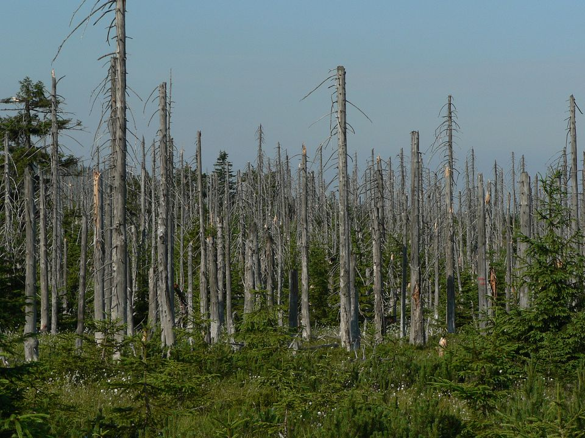
Forest damaged by acid deposition, Jizera Mountains, Czech Republic. Photo: Lovecz, public domain, Wikimedia Commons.
A puzzle from the Swedish forests
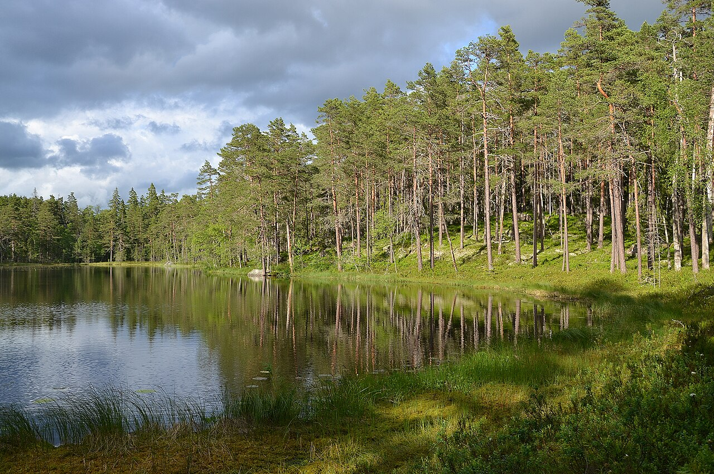
Forest lake, Norra Kvill National Park, Småland. Photo: Pudelek, CC BY-SA 4.0, Wikimedia Commons.
Much of Sweden sits on granite and gneiss. These rocks weather slowly and release few dissolved ions. Lakes on them are clear and soft: they contain little dissolved material.
Where the bedrock or soil contains limestone (calcium carbonate), the water carries much more dissolved calcium and carbonate species.
Both kinds of lake received similar acid deposition. The soft-water lakes acidified. The limestone lakes did not.
Question for this lecture: what is it about dissolved carbonate that lets a lake absorb acid?
Two lakes, two ion signatures
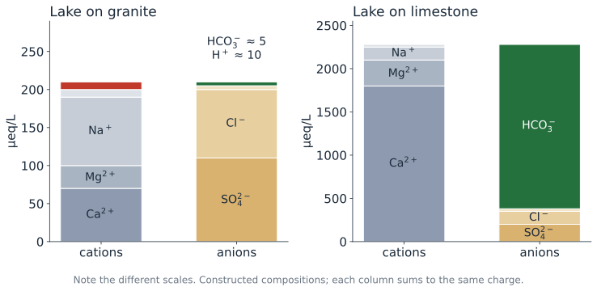
Each column adds up charge (µeq/L). Cations and anions must balance, as in the last lecture. In the limestone lake, most negative charge is carried by bicarbonate (HCO₃⁻). In the granite lake, bicarbonate is almost absent and sulfate from acid rain dominates.
Sweden’s response: add limestone
Forest liming by helicopter, Kungsbacka, Sweden. Photo: Bulver, CC BY-SA 3.0, Wikimedia Commons.
Since the late 1970s, Sweden has spread finely ground limestone (CaCO₃) on thousands of lakes, streams, wetlands and forest soils. Sweden has run one of the largest liming programmes in the world.
Liming does not remove the acid rain. It adds something to the water that takes up hydrogen ions.
To understand why it works and how much is needed, we need to know:
what forms carbon takes when it is dissolved;
how those forms trade hydrogen ions;
how to count the water’s capacity to neutralise acid.
A laboratory version of the puzzle
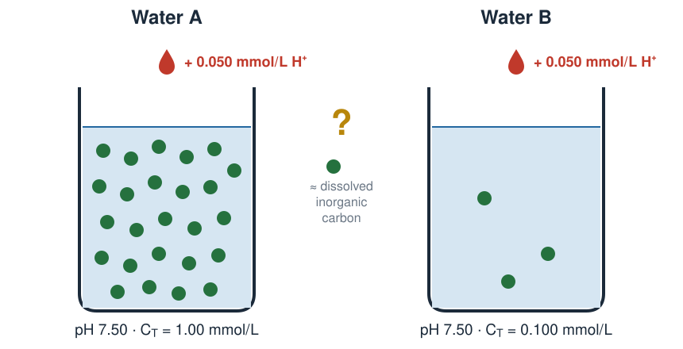
Two constructed waters both start at pH 7.50. Water A contains ten times more dissolved inorganic carbon than Water B. Each receives the same small dose of strong acid, with negligible dilution.
Predict before we calculate: which pH falls more? What does a pH reading alone leave out?
Where dissolved carbon comes from
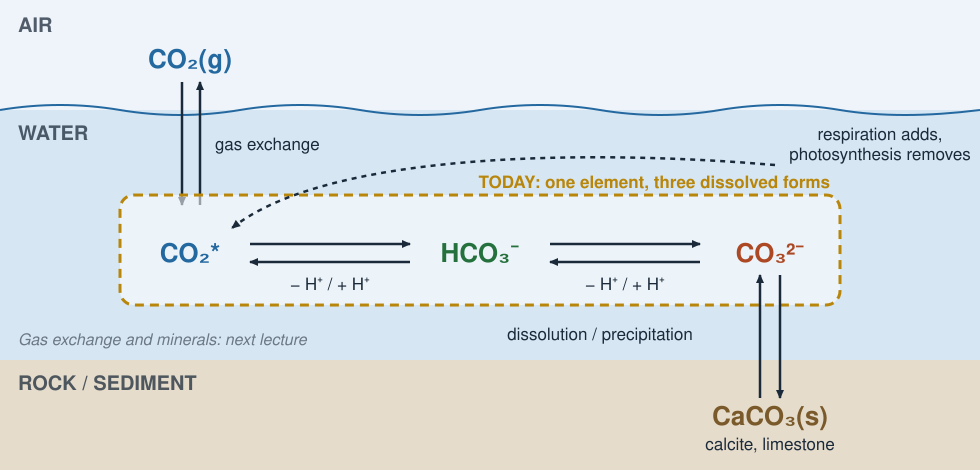
Carbon enters water from the air (carbon dioxide), from rocks (carbonate minerals) and from organisms (respiration). Once dissolved, it is shared between three forms that convert into each other by gaining or losing H⁺. Today we work inside the dashed box.
CT is the total dissolved inorganic carbon. CO₂* groups dissolved CO₂ with the small amount of carbonic acid (H₂CO₃). When one species converts to another, carbon is redistributed, not removed.
Low pH (many H⁺) pushes both equilibria to the left; high pH pushes them to the right. Natural freshwaters (pH ≈ 6–8.5) sit mostly in the bicarbonate region.
Worked example, pH 8.35:r_1=100, r_2=0.01047, so 1 : 100 : 1.047.
Divide each by the sum, 102.047, to get fractions α:
α₀ = 0.0098 · α₁ = 0.9799 · α₂ = 0.0103
Check: they sum to 1.
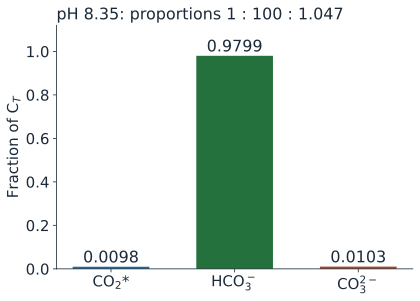
The distribution diagram
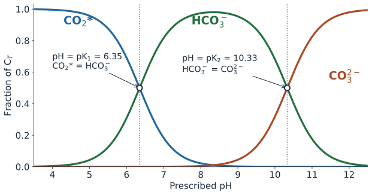
Repeat the calculation at every pH and you get this diagram. Where curves cross, pH = pK. Each species dominates across about four pH units. The x-axis is a prescribed pH, not an amount of acid added and not time.
Where real waters sit
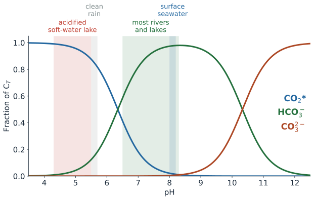
Clean rain (about 5.6) is acidic just from dissolved CO₂. Most lakes and rivers lie between 6.5 and 8.3, where bicarbonate dominates. Surface seawater is near 8.1. An acidified soft-water lake can fall below pH 5, where nearly all carbon is CO₂*.
Check yourself
Use the distribution diagram and the ratio rule. No calculator needed.
At pH 5.35, what is [HCO₃⁻] / [CO₂*]?
At pH 10.33, which two species are equal? Is either exactly half of CT?
A lake is at pH 7.35 with CT = 0.50 mmol/L. Roughly how much of the carbon is bicarbonate?
True or false: “At pH 8 a water has a lot of bicarbonate.”
Fractions do not give the amount
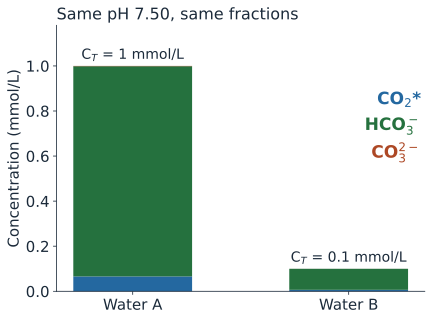
Both waters are at pH 7.50, so they have identical fractions: about 93% bicarbonate and 7% CO₂*.
But the amount of bicarbonate is
Water A: 0.93 mmol/L
Water B: 0.093 mmol/L
pH sets the shape of the column; CT sets its height. Each bicarbonate ion can take up one H⁺. Water A has ten times as many to offer.
Weathering of limestone adds Ca²⁺ with HCO₃⁻: alkalinity rises.
Acid deposition adds SO₄²⁻ with H⁺: alkalinity falls.
The lake’s acid reserve is set by its catchment.
Three quantities, three questions
Quantity
Answers the question
pH
How acidic is the water now?
Alkalinity AT
How much strong acid can it neutralise?
Buffer capacity β
How much acid moves pH by one unit, here?
At pH 7.50, Water A’s buffer capacity is about ten times Water B’s.
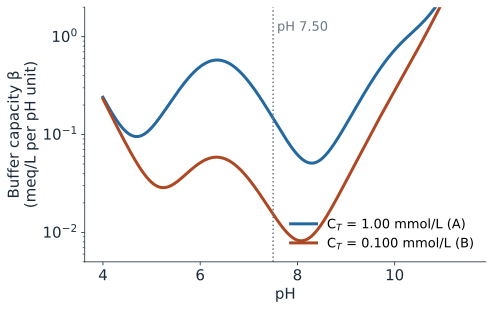
Acid consumes alkalinity, not carbon
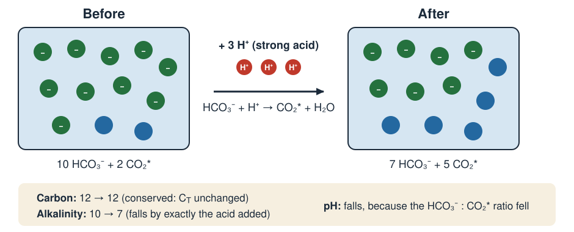
For a strong-acid dose q (eq/L) in our closed water: \;A_{T,\text{after}}=A_{T,\text{before}}-q\; and C_T is unchanged.
Do not subtract an acid dose from a pH value. pH must be recalculated from the new AT and CT.
Finding the new pH
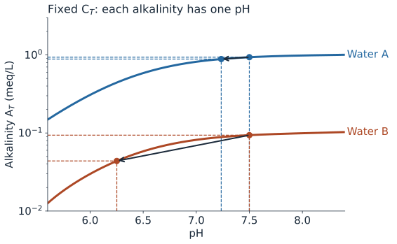
At fixed CT, alkalinity rises steadily with pH. Each alkalinity value has exactly one pH.
Start at pH 7.50 on the curve.
Lower AT by 0.050 meq/L.
Read off the new pH.
The same step down is a small fraction of Water A’s alkalinity and a large fraction of Water B’s (note the log axis).
Return to the two waters
Constructed water
CT (mmol/L)
AT before (meq/L)
AT after (meq/L)
Final pH
A
1.00
0.9356
0.8856
7.235
B
0.100
0.09382
0.04382
6.252
Water A lost about 5% of its alkalinity and dropped 0.27 pH units.
Water B lost about 53% and dropped 1.25 pH units: over ten times more H⁺.
Same starting pH, same dose, very different outcome. The difference is the carbon inventory, which a pH reading cannot show.
The whole acid response
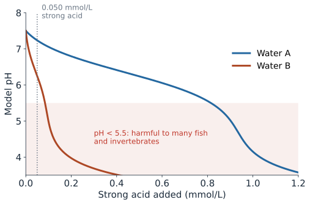
Keep adding acid. Water B’s pH collapses once its small alkalinity is used up (about 0.09 mmol/L). Water A holds above pH 6 until roughly 0.6 mmol/L, then also falls once its reserve runs out near 0.94.
Each mole of dissolved calcite neutralises 2 equivalents of acid, adding 2 eq of alkalinity.
Back of the envelope: raise a 1.0 × 10⁶ m³ lake from AT = 0.044 to 0.20 meq/L.
Needed: 0.156 meq/L = 0.078 mmol/L CaCO₃
= 7.8 g CaCO₃ per m³ → ≈ 8 tonnes, if all dissolves
Real liming uses more, because not all the lime dissolves and the lake water is gradually replaced: hydraulic residence time, as in unit 1.
Calcite (CaCO₃) crystal, about 6 cm. Photo: James St. John, CC BY 2.0, Wikimedia Commons.
The same chemistry, on a bigger stage
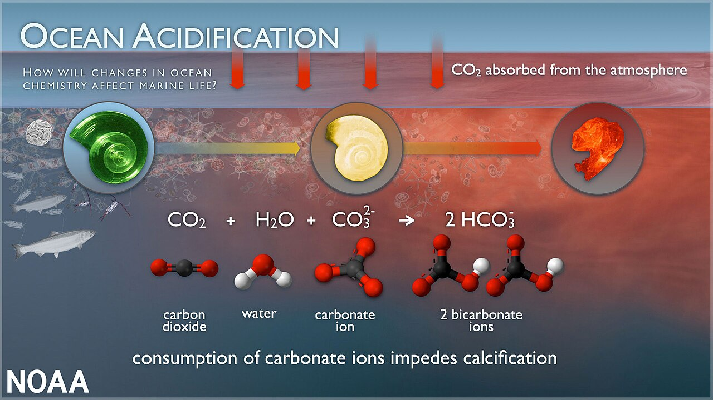
NOAA illustration, public domain, Wikimedia Commons.
The ocean absorbs about a quarter of human CO₂ emissions.
Adding CO₂ raises CT but not alkalinity:
\mathrm{CO_2+H_2O+CO_3^{2-}\rightarrow 2HCO_3^-}
pH falls (by about 0.1 since pre-industrial times) and carbonate ion is consumed. Shell-building organisms such as pteropods find it harder to build and keep calcium carbonate.
This is not the same as adding strong acid. Next lecture shows why.
Common mistakes to avoid
“Same pH means same water.” pH fixes the fractions, not the amounts.
“Acid destroys carbonate carbon.” In a closed water it only converts HCO₃⁻ to CO₂*. CT is unchanged.
“Subtract the dose from the pH.” Subtract the dose from alkalinity, then find the pH.
“At pH = pK each species is 50%.” The two neighbours are equal; the third species is still present.
“Alkalinity is how basic the water is.” It is a capacity in eq/L, not a pH. Acidic waters can have positive alkalinity.
“The distribution diagram shows a titration.” Its x-axis is prescribed pH, not acid added.
Explore: carbonate response to acid
Compare Water A and Water B: same initial pH and acid dose, different carbon inventories.
 Forest liming by helicopter, Kungsbacka, Sweden. Photo: Bulver, CC BY-SA 3.0, Wikimedia Commons.
Forest liming by helicopter, Kungsbacka, Sweden. Photo: Bulver, CC BY-SA 3.0, Wikimedia Commons. Calcite (CaCO₃) crystal, about 6 cm. Photo: James St. John, CC BY 2.0, Wikimedia Commons.
Calcite (CaCO₃) crystal, about 6 cm. Photo: James St. John, CC BY 2.0, Wikimedia Commons.